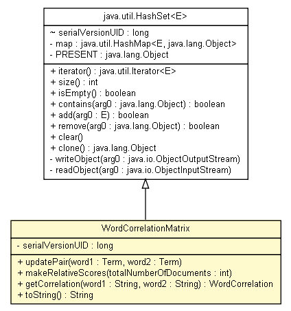

tud.iir.classification
Class WordCorrelationMatrix

java.lang.Object
 java.util.AbstractCollection<E>
java.util.AbstractSet<E>
java.util.HashSet<WordCorrelation>
tud.iir.classification.WordCorrelationMatrix
java.util.AbstractCollection<E>
java.util.AbstractSet<E>
java.util.HashSet<WordCorrelation>
tud.iir.classification.WordCorrelationMatrix
- All Implemented Interfaces:
- java.io.Serializable, java.lang.Cloneable, java.lang.Iterable<WordCorrelation>, java.util.Collection<WordCorrelation>, java.util.Set<WordCorrelation>
public class WordCorrelationMatrix
- extends java.util.HashSet<WordCorrelation>
Correlation matrix.
- See Also:
- Serialized Form
| Methods inherited from class java.util.HashSet |
add, clear, clone, contains, isEmpty, iterator, remove, size |
| Methods inherited from class java.util.AbstractSet |
equals, hashCode, removeAll |
| Methods inherited from class java.util.AbstractCollection |
addAll, containsAll, retainAll, toArray, toArray |
| Methods inherited from class java.lang.Object |
finalize, getClass, notify, notifyAll, wait, wait, wait |
| Methods inherited from interface java.util.Set |
addAll, containsAll, equals, hashCode, removeAll, retainAll, toArray, toArray |
serialVersionUID
private static final long serialVersionUID
- See Also:
- Constant Field Values
WordCorrelationMatrix
public WordCorrelationMatrix()
updatePair
public void updatePair(Term word1,
Term word2)
makeRelativeScores
public void makeRelativeScores(int totalNumberOfDocuments)
- The co-occurrences are saved in the matrix as absolute values.
They can be made relative by dividing through the total number of documents.
getCorrelation
public WordCorrelation getCorrelation(java.lang.String word1,
java.lang.String word2)
toString
public java.lang.String toString()
- Overrides:
toString in class java.util.AbstractCollection<WordCorrelation>